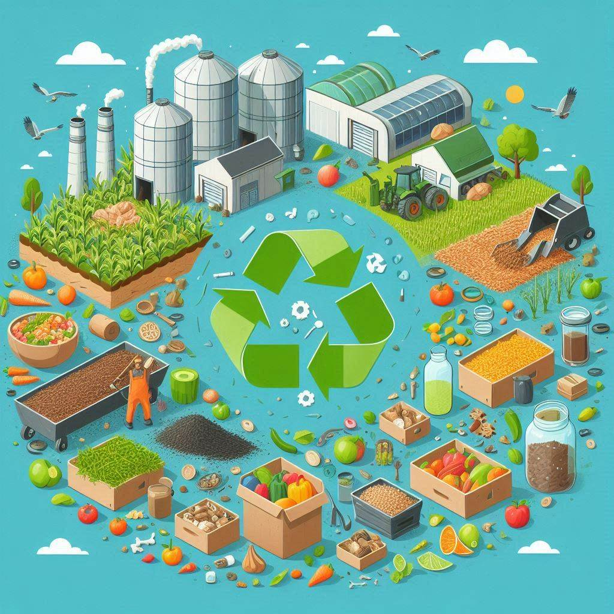
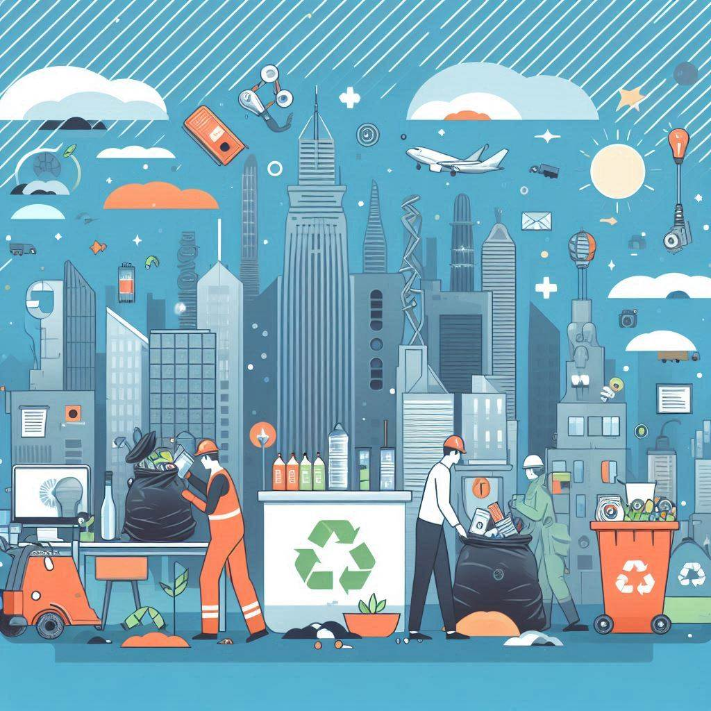
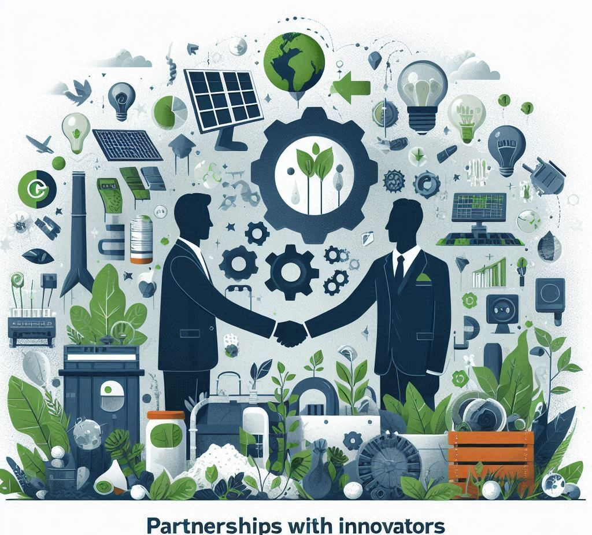
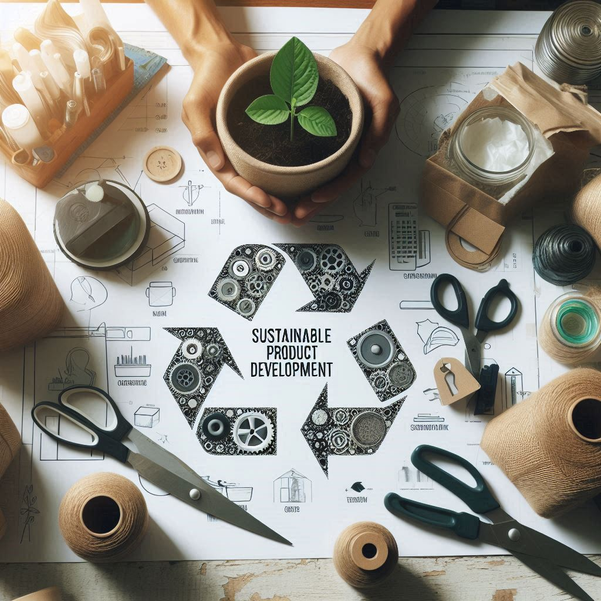
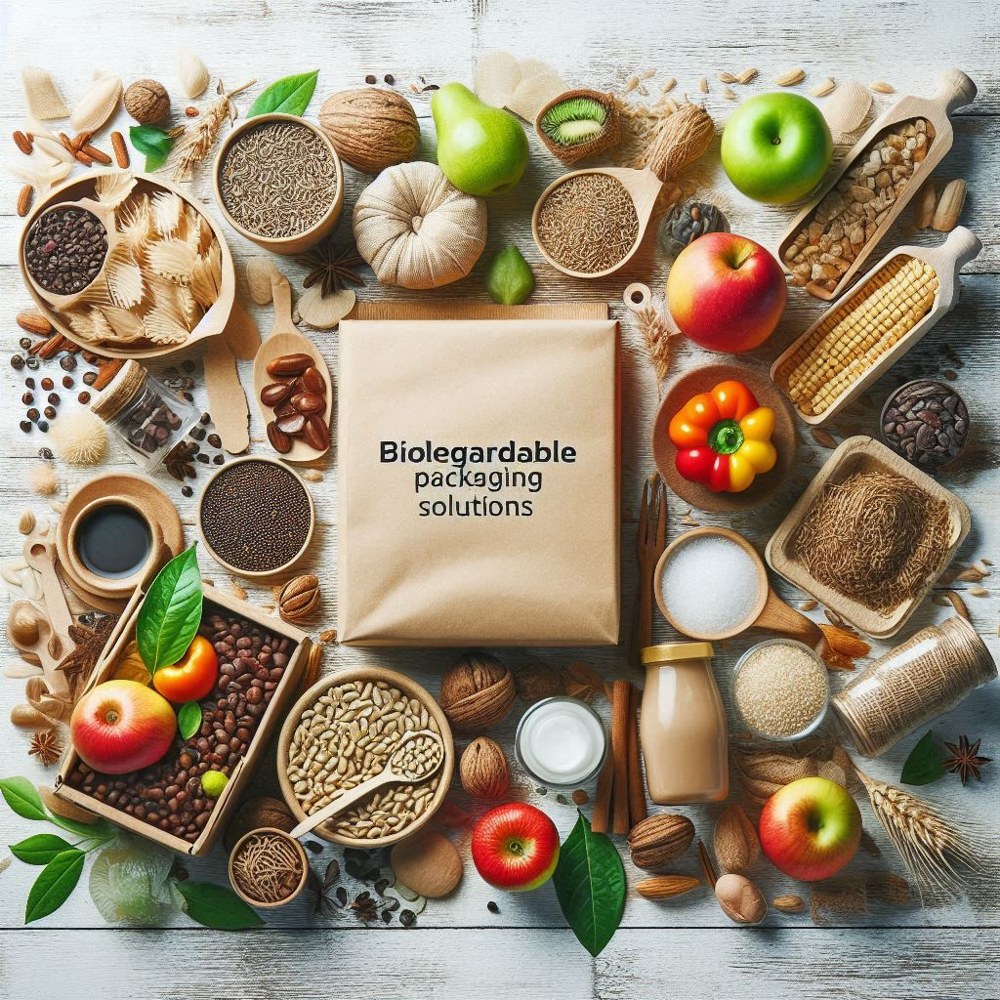

EcoFusion Hub
Innovating solutions for Greener Future
Innovating solutions for Greener Future
EcoFusion Hub offers comprehensive waste management solutions focused on repurposing waste from both agricultural and Cityscape environments. Our platform connects farmers, innovators, and manufacturers, enabling them to collaborate on eco-friendly solutions that reduce waste and promote sustainability.

We transform agricultural waste such as crop residues, manure, and organic matter into valuable products like compost, biodegradable packaging, and biofuels. This reduces the environmental impact and generates revenue for farmers.

We work on recycling waste from urban environments, including plastics, glass, and construction materials. This waste is turned into eco-friendly products like bio-plastics, organic fertilizers, and recyclable home essentials.

Our platform facilitates partnerships with leading technology companies and innovators who specialize in turning waste into groundbreaking eco-friendly products. This includes creating new materials from agricultural and Cityscape waste for use in multiple industries.
We conduct educational programs, workshops, and outreach events aimed at raising awareness about sustainable waste management, recycling practices, and eco-friendly innovations in both urban and rural communities.

We collaborate with designers and manufacturers to create sustainable products from upcycled materials, offering a range of eco-friendly alternatives for everyday use, from clothing to homeware.

We create eco-friendly packaging alternatives using agricultural and industrial waste, reducing reliance on plastics and contributing to a cleaner environment by providing businesses with sustainable packaging options.